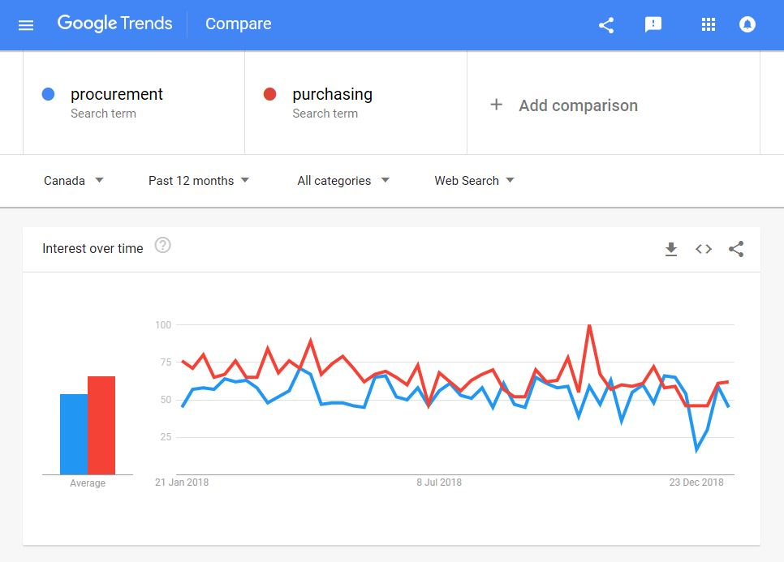
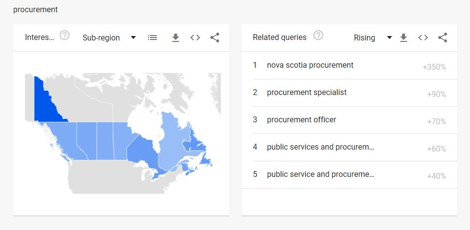
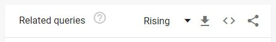
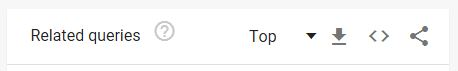
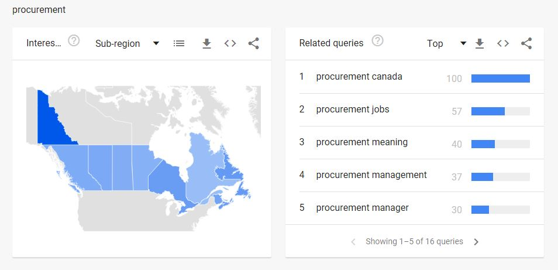

Systèmes d’étiquetage
Durée de la lecture : 4,5 minutes
Sur cette page
- Comment fonctionnent les étiquettes
- Le danger des étiquettes
- Identifier les mots-clés de l’utilisateur
Comment fonctionnent les étiquettes
À l’aide d’une situation réelle, pensez aux espaces publics et à la façon dont certains objets communs peuvent nous communiquer le contexte, l’action et le sens en un coup d’œil :
- Les bancs servent à s’asseoir et à observer
- Les escaliers servent à monter et à descendre
- Les portes servent à entrer et à sortir
- Les monuments nous rappellent l’histoire et le contexte
De simples repères visuels que nous connaissons bien nous permettent de comprendre rapidement une grande quantité d’information. Par exemple, si vous apercevez un terrain de jeux, des bancs extérieurs et un grand espace vert ouvert, vous savez que cet endroit pourrait être un parc.
Photo : Droneflyer Nick sur Unsplash
Dans l’environnement numérique, les étiquettes fonctionnent de manière très similaire. D’un seul coup d’œil, elles nous aident à donner un sens et à décider si nous sommes au bon endroit ou non.
Les étiquettes sont les noms que nous donnons aux :
- Catégories d’information
- Titres et sous-titres des pages
- Texte du lien
- Mots d’action des éléments interactifs tels que des boutons (appelés aussi appels à l’action (disponible en anglais seulement))
Il vous incombe de veiller à ce que les étiquettes saisissent et communiquent clairement l’objectif visé par une page, un segment de texte ou un groupe de contenu. Pour ce faire, soyez à l’aise de poser beaucoup de questions.
Je peux regarder une étiquette du point de vue de l’utilisateur et me demander si elle a un sens pour lui. Et je peux poser des questions plus pointues : cette étiquette s’aligne-t-elle parfaitement avec le contenu qu’elle représente? Dans quelle mesure cette étiquette établit-elle les attentes lorsque l’utilisateur clique dessus? Comment une description ou un exemple aiderait-il à clarifier cette étiquette?
Le danger des étiquettes
Des étiquettes qui ne sont pas claires sèment la confusion chez les utilisateurs, leur font perdre du temps et les empêchent de trouver l’information dont ils ont besoin.
De plus, certaines étiquettes, même si elles sont claires et concises, peuvent avoir un impact négatif sur l’expérience utilisateur. Certaines étiquettes ont une composante émotionnelle ou sociale que vous devez prendre en considération. Des sujets comme l’immigration, l’invalidité, les finances et la santé peuvent être délicats ou stressants pour les gens. Tenez compte du contexte et de l’impact du langage entourant ces étiquettes.
Exemple 1
De nombreuses affections médicales ayant un impact important sur la vie quotidienne sont considérées comme telles, une affection plutôt qu’un handicap.
Deux des critères d’admissibilité au crédit d’impôt pour personnes handicapées (CIPH) sont « d’être limité de façon marquée dans au moins une des activités courantes de la vie quotidienne ou d’avoir besoin d’une thérapie vitale ».
Malgré le nom du crédit d’impôt, le fait d’avoir un « handicap » ne fait pas partie des critères.
Une personne atteinte de diabète, d’Alzheimer ou qui a perdu l’ouïe plus tard dans sa vie (par exemple) peut ne pas penser qu’elle a un handicap. Cela peut signifier qu’ils ne bénéficient jamais du soutien financier auquel leur condition les rend potentiellement admissibles.
L’étiquetage est donc important. Dans ce cas, un nom comme « Crédit d’impôt pour incidence sur la santé » serait plus inclusif. Le filtrage ne changerait pas, mais un plus grand nombre de personnes pourraient vérifier si elles, ou un être cher, sont admissibles.
On ne peut appliquer l’architecture de l’information sans se soucier de la politique, de la gouvernance et de la culture. Si vous essayez, vous échouerez. [...]
Une autre chose qui est excitante, c’est que je constate qu’on parle davantage d’éthique. Les gens se demandent de plus en plus si nous faisons ce qu’il faut et si nous aidons vraiment nos clients.
Exemple 2
L’étiquette « voyageur digne de confiance » est utilisée pour désigner un point de contrôle de sécurité des compagnies aériennes pour les voyageurs préautorisés. Il s’agit d’un terme interne efficace, lié au « programme pour les voyageurs dignes de confiance ». Cependant, lorsqu’on l’utilise dans un contexte de tous les jours, cela semble indiquer que ceux qui ne sont pas préautorisés ne sont pas dignes de confiance.
Gazouillis réel d’un utilisateur :
S’il y a une ligne pour voyageurs dignes de confiance, est-ce que cela veut dire qu’on ne fait pas confiance à ceux qui sont exclus? Pourrait-on utiliser un autre terme? Comme préautorisé? @FlyYYC #yyc #inclusive #totrustornot
{kind=link}
Exemple 3+
Pour des exemples de réussite ou d’échec d’une étiquette, se reporter à : Principe des choix et Principe de la divulgation
Identifier les mots-clés de l’utilisateur
Une façon rapide d’aider à déterminer les mots-clés de l’utilisateur consiste à examiner les analyses de votre site.
De plus, Google Trends affichera la fréquence des termes de recherche par pays, province, période et catégorie.
Exemples :
- Au cours des 12 derniers mois, la recherche sur « bien-être » au Canada surpasse celle sur « mieux-être ». La moyenne quotidienne est :
- 51 recherches sur « bien-être »
- 25 recherches sur « mieux-être »
- Au cours des 12 derniers mois, la recherche sur « achat » au Canada surpasse celle sur « approvisionnement ». La moyenne quotidienne est :
- 64 recherches sur « achat »
- 1 recherches sur « approvisionnement »
En anglais : Au cours de la période de 12 mois, les recherches au Canada pour le terme « procurement (approvisionnement) » sont semblables aux recherches pour le terme « purchasing (achat) ».
Cependant :
- Faites défiler la page pour obtenir plus d’information. 
- Changez le menu déroulant « Rising (En progression) » pour « Top (Les plus fréquentes) » pour voir le contexte dans lequel « procurement » est le plus fréquemment recherché.
AvantAprès - Notez le contexte dans lequel s’effectue la recherche du terme « procurement ». La troisième recherche la plus populaire est « procurement meaning », ce qui donne à penser que beaucoup d’utilisateurs ne savent pas de quoi il s’agit en premier lieu. Ainsi, bien que le terme « procurement » soit populaire, il ne l’est pas nécessairement pour la bonne raison. 
Il est important d’identifier les mots-clés d’un utilisateur, mais assurez-vous aussi de déterminer pourquoi il est populaire. Les mots-clés populaires, après une analyse approfondie, doivent être pris en compte lors de la création de contenu.
Toutes les sections du cours
- Date de modification :